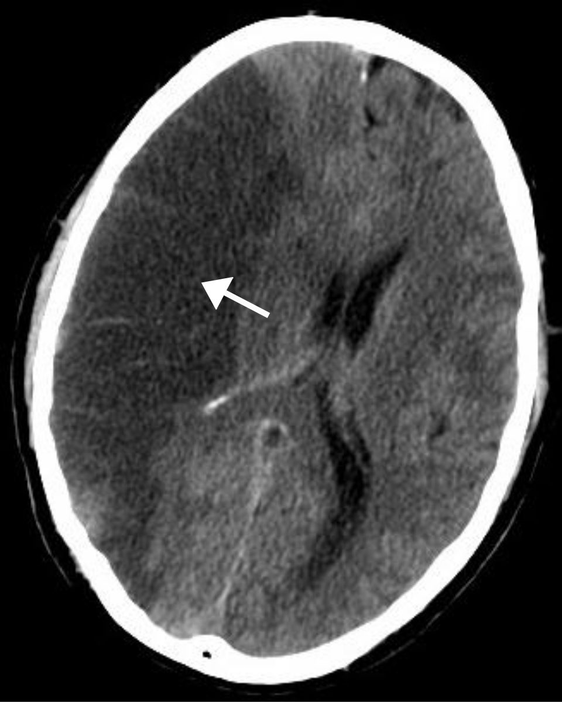

All topics
Every section of Neurolopedia.

ConditionsNeurological conditions
Stroke, migraine, epilepsy, Alzheimer's, Parkinson's, multiple sclerosis, ALS, neuropathies and more.
59 articles → Diagnosis
DiagnosisFrom suspicion to testing
Neurological examination, CT, MRI, EEG, EMG, lumbar puncture, PET, genetics and memory tests.
11 articles → Treatments
TreatmentsTreat, rehabilitate, support
Thrombolysis and thrombectomy, antiseizure medicines, levodopa, deep brain stimulation, anti-CGRP drugs and rehabilitation.
22 articles → Anatomy
AnatomyA map of the nervous system
Neurons, synapses, glia, cortex and lobes, cerebellum, basal ganglia, brainstem, spinal cord and nerves.
17 articles → Brain and mind
Brain and mindHow the brain works
Memory, sleep, pain, plasticity, language, vision, emotion, consciousness and development.
12 articles → People
PeopleThe people behind neurology
Anatomists, clinicians, physiologists and patients who built neurology.
30 articles → Brain health
Brain healthCaring for your brain
Exercise, sleep, diet, blood pressure, hearing, alcohol, screens, helmets and stress.
12 articles → FAQ
FAQFrequently asked questions
Short, clear answers about stroke, headache, memory, epilepsy and more.
11 articles →